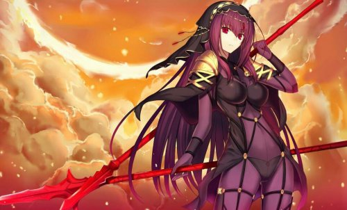

斯卡哈
宝具：贯穿死翔之枪(绿色宝具)
(宝具本开放后)对敌方单体赋予石化状态
对敌方单体造成超强力攻击(1600%/2000%/2200%/2300%/2400%)
中概率的即死效果(oc效果提升)(60%/70%/80%/90%/100%)
绿色色卡的宝具，必中的一回合眩晕，超高的倍率配合师匠本身的2技能魔放可以对弓系boss造成巨额伤害
而三技能对神性/死灵特攻，也让师匠可以在使用这个技能的当回合对拥有此特性的敌小兵/从者一击必杀
目前弓兵从者里并没有死灵特性的从者，而能被神性特攻的从者为，闪闪，二姐，幼闪闪
所以师匠也被戏称为对闪闪特攻
同时也对b阶的黑狗，金时，奶光,b叔有特攻
因为三技能只持续一回合，因此并不能说因为有三技能的存在就盲目上师匠去桶神性/死灵的敌方从者/单位，要小心注意职介克制，避免出现一枪下去什么都没发生的尴尬
一般来讲二技能的魔放，和三技能的特攻都会绑定在宝具回合释放，所以不用细谈;特殊情况可能为魔放拿来辅助给队友爆发(比如杰克，总司，肯娘，b长江这种绿色宝具)
师匠的重中之重就是
1技能，让人戏称为魔境的弱智
80%几率暴击威力提升(3回合)
30%32%34%36%38%40%42%44%46%50%
80%几率星星集中状态(3回合)
300%320%340%360%380%400%420%440%460%500%
赋予自身回避状态(1回合)
欧洲人手里稳定爆伤集星，非洲人手里只有回避作用的技能，说起来都是泪
这里可以看出，师匠的爆伤和集星是持续3t的， 本身暴击权重也有不低的88，开启集星技能一般都能抢到星星
基于师匠自身的红卡高达6hit，而绿卡只有可怜的2hit，和总司杰克另外两位绿卡三杰不一样，实际上师匠大部分时间尽量以红卡输出为主，本身的打星能力一般，在暴击队里一般是定位为暴击主手，
同时辅助队伍的绿色宝具打星手进行爆发(比如长江，阿塔)
因此在配卡许可的回合，开启1技能(rp好爆伤集星都有)，然后以红卡起手来进行爆发就是师匠比较正确的食用方法，而不是想着(哎呀，师匠是绿卡三杰哎，是不是应该用绿卡输出)这样
如果情况允许，可以进行红绿红ex，红红宝具ex这种方法来进行输出
根据坛友回帖，修正一下，红宝具红ex输出为理论最高输出，但无论是哪种方式，都应该以红卡起手
在np获取率方面，因为自身只有一蓝，同时蓝卡hit数只有3hit， 因此np获取率一般 ，一般搭配一个充电宝食用更好(对就是你孔明先生，不要耷拉着脸啦今天还是要继续加油加班的说)，
有心人甚至可以搭配拉二的太阳神来保证1技能必中(国服太远不提 )
斯卡哈只有蓝卡的NP获取还行，然而只有1张，绿卡完全是残疾水平，甚至不如蓝呆毛和阿提拉，红卡因为多Hit所以打NP效率和绿卡差不多，所以常见斯卡哈打NP技巧为蓝红红，但是红绿没法和其他卡配合3绿，又受限于只能在斯卡哈自己进行蓝卡开头连击时才有效，
没有充电宝又不带NP礼装根本打不满蓝，斯卡哈打NP主要还是靠EX